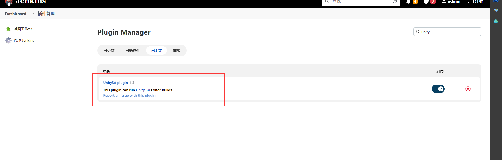
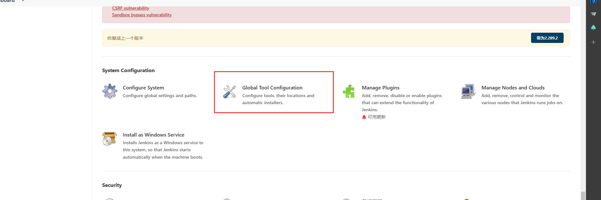
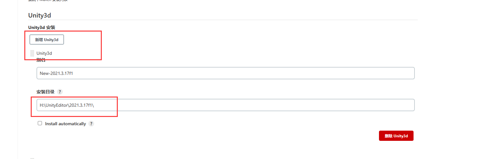
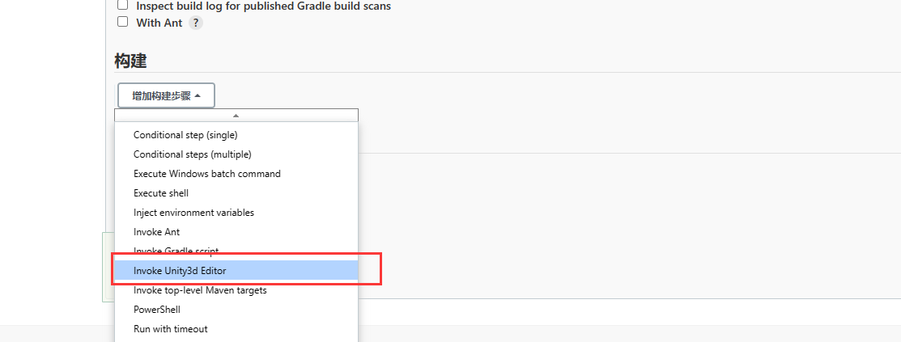
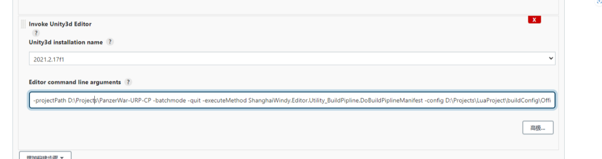

18.1 Jenkins 安装与配置教程
1. 安装 Jenkins：
Jenkins 是一款开源的自动化构建工具，你需要先安装 Jenkins。你可以从 Jenkins 的官方网站 https://www.jenkins.io/download/ 上下载适合你系统的 Jenkins 安装包，按照安装向导进行安装。安装成功后，你可以通过在浏览器中输入 http://localhost:8080/ 访问 Jenkins。
面向小白的详细的安装教程：
- 在你的服务器或本地计算机上打开一个浏览器，并转到 Jenkins 官方网站：https://www.jenkins.io/download/。
- 在 Jenkins 的下载页面上，你可以看到不同操作系统的 Jenkins 安装包。选择适合你的操作系统的 Jenkins 安装包下载链接，比如 Windows 系统可以选择 Windows 的 MSI 安装包。
- 下载完成后，双击安装包打开安装向导。按照向导的提示，选择安装目录、安装类型等设置。默认情况下，Jenkins 会安装在 C:\Program Files (x86)\Jenkins 目录下。
- 在安装过程中，你需要选择安装 Jenkins 的运行环境。你可以选择安装 Jenkins 的 Windows 服务或者作为一个普通的 Windows 程序运行。对于大多数情况，我们建议安装 Jenkins 的 Windows 服务，以便在系统重启后能够自动启动 Jenkins。
- 安装完成后，Jenkins 会启动并监听默认的 HTTP 端口 8080。你可以在浏览器中输入 http://localhost:8080/ 访问 Jenkins 的 Web 界面。如果你安装了 Jenkins 的 Windows 服务，那么 Jenkins 会在后台自动运行，并且你可以在 Windows 服务列表中找到它，以便在需要的时候手动启动、停止或重启 Jenkins。
- 在首次启动 Jenkins 时，你需要输入管理员帐号的用户名和密码。Jenkins 会要求你选择安装插件，你可以选择推荐的插件或者手动选择需要安装的插件。安装插件需要一些时间，请耐心等待。
- 安装完成后，你会看到 Jenkins 的主界面。现在你已经成功安装了 Jenkins，可以开始使用它来构建你的项目。
2. 安装 Unity3D：
在 Jenkins 中打包 Unity3D 项目之前，需要在 Jenkins 服务器上安装 Unity3D。确保安装了适合你项目的 Unity3D 版本。
Unity Engine Requirement Unity 引擎版本要求
3. 安装 Unity3D 插件：
在 Jenkins 中打包 Unity3D 项目，需要安装 Unity3D 插件。打开 Jenkins，进入“插件管理”页面，搜索“Unity3D”并安装。安装成功后，你需要重启 Jenkins。

4. 配置 Jenkins 项目：
进入 Jenkins 项目的“配置”页面。在设置 Unity3D 安装目录路径。


5. 创建 Jenkins 项目：
在 Jenkins 中创建一个新项目。进入 Jenkins 主页，点击“新建项目”按钮，选择“自由风格软件项目”并输入项目名称。
增加一个构建步骤：

选择刚刚配置的 Unity，然后设置如下打包命令
-projectPath <项目路径> -batchmode -quit -executeMethod ShanghaiWindy.Editor.Utility_BuildPipline.DoBuildPiplineManifest -config <配置文件路径>
